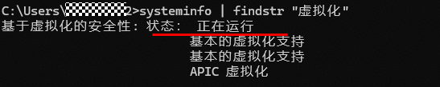
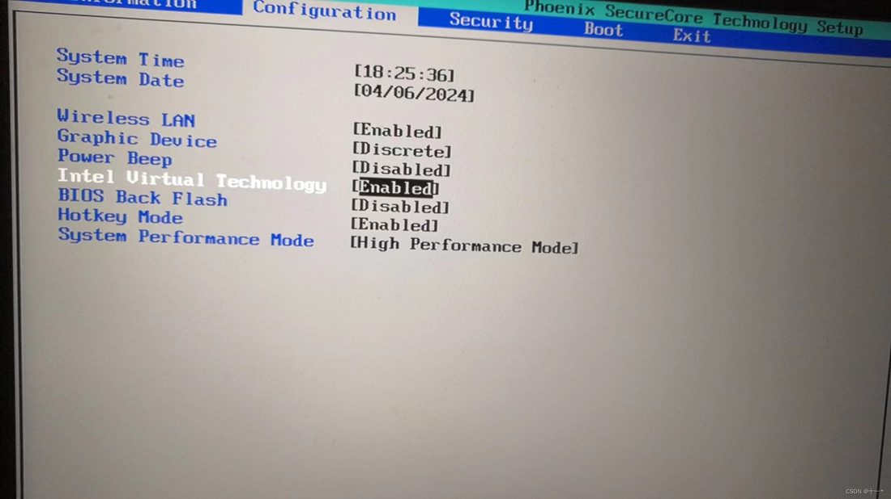
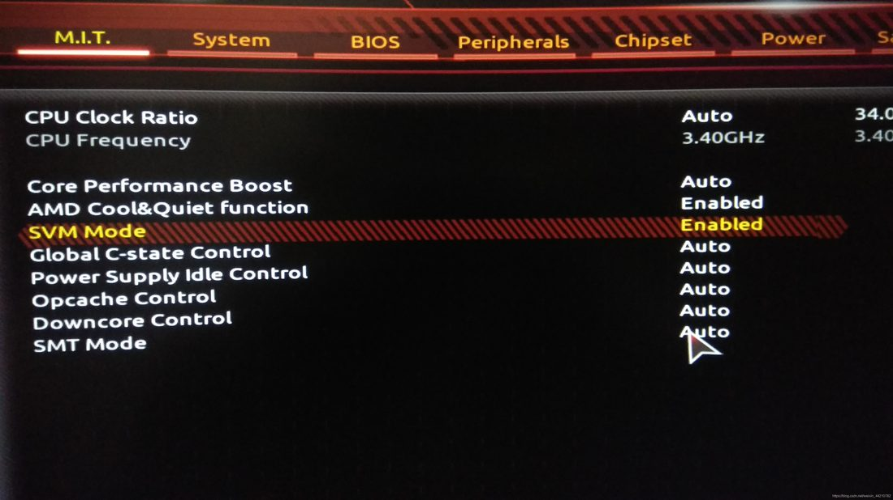

🎯 强调！如果没有办法完成课前环境准备，无法进行授课。强烈建议至少提前三天准备，可以一边办公一边准备。（课前准备工作要2小时左右）
本操作共 4 步：第 1 步准备电脑与操作系统；第 2 步安装开发工具TRAE；第 3 步用 TRAE 完成编程环境准备；第 4 步汇总确认环境准备情况。
🎯先自查这一节。这一节不过关，后面的安装大概率会失败，而且很难救。
强烈建议使用个人 Windows 电脑。系统盘（通常是C盘）至少 2G 容量，非系统盘剩余 20G 容量；剩余内存 ≥ 6G；整台电脑只有一个分区时，至少 30G。
优先 Windows 11。Windows 10 也可用，但必须是 1903 版 / 内部版本 18362 以上（Win+R 输入 winver 查看）；低于该版本无法满足课程环境要求。
阉割版 / 精简版 Windows 会出现各种不可控问题，建议直接重装完整版。
如何在一台电脑上安装 Windows 10/11 的完整版本，请参考这份安装说明。
进 BIOS / UEFI 打开 Intel VT-x 或 AMD-V / SVM Mode。
在 Windows 的命令行窗口，用下面的命令查看虚拟化是否已开启：
systeminfo | findstr "虚拟化"（见下图）

没打开的话，会在装环境时卡住，对照下面两张图操作。不同厂家电脑进入BIOS设置的方式不同，请咨询 DeepSeek、豆包等 AI 工具。


公司网络环境下，请在 Huawei-Guest 网络下操作，并断开 xGate 代理连接。
编程课需要 Google 或 GPT 账号，能科学上网并使用 Canvas；私人电脑要自己解决科学上网问题。办公电脑可用本环境大部分功能，但复杂上云操作因公司安全原因无法上传。
🎯下载安装 TRAE，完成登录与界面设置，选工作目录。
预计 10–20 分钟
D:\TRAE_CN）。
TRAE 已打开并登录。
🎯软件在后台自动下载安装与检查，AI 并行启动 GitHub、CloudBase 账号准备，最后汇总。
预计 45–120 分钟；已有准备复用约 3–10 分钟
D:\ENV）；如果电脑只有 C 盘，则创建 C:\ENV。选择 ENV 作为工作目录。
按TRAE打开的页面完成本人登录或注册、邮箱验证，等TRAE确认账号准备好后继续。
如果未正常自动开始准备 GitHub，请复制如下提示词到 TRAE，并发送
跟随 TRAE 打开的页面，本人完成登录或注册、实名和授权；已有账号直接用。需要本人确认时 TRAE 会提醒。
如果未正常自动开始准备CloudBase，请复制如下提示词到 TRAE，并发送
TRAE 的环境准备工作完成后，会输出准备报告，查看环境安装报告确认正常。成功示例如下图。
🎯 自动汇总编程环境、GitHub、CloudBase 账号等课前准备工作情况
预计 3–10 分钟
如果没有生成汇总报告，或 TRAE 输出的环境准备汇总中存在缺项时，复制下方提示词发送给 TRAE，继续执行。
TRAE 逐项确认编程工具、GitHub、CloudBase 和必要授权的实际结果；有缺项时继续处理。